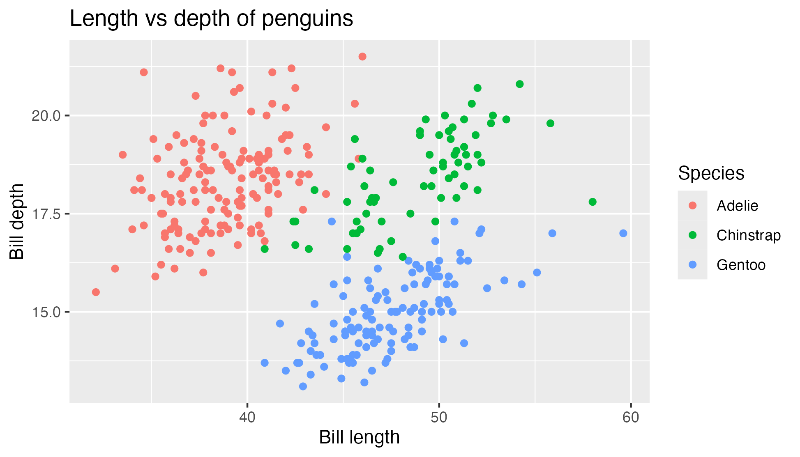

Practice with real plots
Each challenge starts from a finished ggplot2 chart and asks you to rebuild it as closely as you can.
Browser-based R plotting battles
Pick a battle, write R in the browser, and compare your plot against the target with an instant similarity score.

Battle list
Battles range from easy to hard - try something new!
Loading battles...
Each challenge starts from a finished ggplot2 chart and asks you to rebuild it as closely as you can.
webR powers the coding environment, so you can experiment without installing R or any local packages first.
New challenges live in the project repo. Add a self-contained R file and the site can generate the target image.